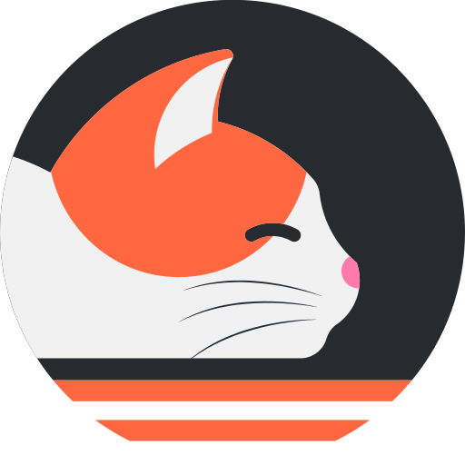

#
Manga Megathread
Everrything Manga Related!

#
Websites
#
Reader
- Mangadex
R+
- Uploads without compression
- Best reader UI
- Uploads from various scanlation groups
- No official translations since it was created for fansub
- Comick
R
- Minimal compression
- Aggregates from various scanlation groups
- Has official translations
- Mangasee | Mangalife | Atsumaru
R
- Has official translations
- Compresses chapter images
- Chapter updates are relatively slow
- Atsumaru scrapes from Mangasee but has better UI
- Colored Manga
R
- Uploads without compression but mostly Shounen centric
- Has both B&W and colored releases
- Uploads official translations & volume releases (if available)
- Lacks in library and upload schedule
- Mangapark
R+
- No Compressed uploads (If source had no compression)
- Has official translations
- UI is a bit cluttered with no upload tags
- Batoto | Mangatoto
R+
- Has official translations
- Has some exclusive uploads
- Indexing is poor quality
- Cubari Proxy R+
- Manga Katana R+
- Manga Fire R
- Manga Reader R
- Mangahasu R+
- Toonily R+
- Manga Buddy | Manga Forest | Manga Mirror R
- Mangacultivator E
- 1st Kiss Manga R-
- Manganato R
R+ Uploads NSFW content on a regular basis.
R Uploads NSFW content, but not always/all of them.
R- Rarely uploads NSFW content.
E Only SFW content.
NR Haven't been rated yet.
Note: None of the websites mentioned are exclusively dedicated to NSFW content. Click here for the hmanga sites.
#
Scanlator
- Animated Glitched Scans +
KR|  Dex Baka - Assorted Scans
- Danke fürs Lesen Scans | Dex Baka
- LHTranslation | Dex Baka
- Scylla Scans | Dex Baka
- TCB Scans | Dex Baka
- Tritinia +
CNKR| Baka
- Ace Scans | Baka
- Boredom society | Baka
- Circle | Baka
- Kirei Cake | Baka
- Knox | Baka
- Komi-scan wa komyushou desu | Baka
- Kouhai scanlations | Baka
- Laughing in quarantine | Baka
- Random scans +
KRIDCN💀 | Baka - SleepySlimeTL | Baka
- Tonikaku scans | Baka
- Toor Scans | Baka
- Toru Scans | Baka
- What's typesetting | Baka
- Asura Scans +
CN| Baka - Flame Scans +
CN| Dex Baka - Immortal Updates +
CN| Dex Baka - Leviatan scans +
CN| Baka - Luminous Scans | Baka
- Manhwa Freak | Dex Baka
- MM Scans | Dex Baka
- Reaper Scans +
CN| Dex Baka - Reset Scams +
JPCN| Baka - Tritinia Scans +
JPCNBaka - Void Scans +
CN - Zero Scans +
CN| Dex Baka
- Ansh Scans | Dex Baka
- Disaster Scans
- Drake Scans | Dex Baka
- Manhua Ga
- Manhua Plus | Baka
- Manhua SY | Manga SY
- Realm Scans +
KR| Baka - xCaliBR Scans | Baka
I have added all the well-known scanlators for manhwa and manhua, but for manga, it's not practical or possible to add all the famous ones. So I have added my favorite ones. Yes, this section is kind of biased.
#
Nyaa Uploaders
- 0v3r compilation
- 1r0n 7seas comikey jnovel kmanga kodansha sq. enix up! viz yen
- anadius viz
- Danke 7seas kodansha viz yen
- Digital Manga Fan 7seas jnovel kodansha op yen
- Empy compilation glacier plus
- Lord_ne crunchy lezhin yen
- Lucaz 7seas yen
- Oakminati comikey crunchy mangamo plus sq. enix up!
- PZG audio
- Shellshock kodansha viz yen
- Shizu kodansha sublime viz yen
- Stick audio viz yen
- Ushi 7seas yen
#
Direct Download

#
Software
#
Android
- Tachiyomi
Web
Forks
- Great Customizable UI
- Ton of manga sources
- Download and local reader support
- Tracking & sync support
- High cache consumption
- Perfect Viewer
Local
- The reader itself is really good with a lot of filters
- Has plugin support for the cloud services but not for manga websites
- Support for all the comic formats.
- The app is light but the UI looks old
- A few features are behind paywall
- Kotatsu
Web
- Minimalist UI with limited customization
- Offers Manga Suggestions
- Download and local reader support
- Tracking & sync support
- Lacks some basic features
#
PC
#
Manga
#
Online:
- Houdoku
win
mac
lin
- Easy to setup
- Good Customizable UI
- Has good amount of extensions
- Tracker integration
- Can download manga
- Tachidesk
win
mac
lin
- Uses the same extensions and backups as tachiyomi so good extension support
- UI is same as tachiyomi
- Can download manga
- No tracker integration
- Tachidesk base
- lots of sources to pick from
- basic settings for reading
- lacks basic reader features
- complicated requirements such as JAVA
- Sorayomi
- Needs Tachidesk server to work
- Minimal and easy to use, outdated 2022
- insufficient features
- loads slowly (depends on your internet)
- Tachidesk JUI
- Needs Tachidesk server to work
- Batch downloading manga
- new tab window while stream reading
#
Offline:
- CDisplayEx
win
- Minimalist UI
- Fast and simple reader with good amount of configuration
- Has more resizing options
- No vertical reading mode
- YACReader
win
mac
lin
- Fast and customizable
- Comes with YAClibrary, which is like calibre for comics
- No vertical reading mode
- OpenComic
win
mac
lin
- Decent UI
- Initial load times is slightly slower than above two readers
- Has vertical reading mode with limited amount of customization
#
iOS
- Paperback
Web
- Very clean UI with changeable theme
- Tracker & sync support
- Many different download options
- AppStore Release only for selected countries
- Aidoku
Web
- Available on Tesflight (no Sideloading needed)
- Many sources
- Tracker support
- Chapter download possible
- Still in active Development
- Hanami
- Available on Testflight (no Sideloading required)
- OK-ish UI with some lags
- only MangaDex as a source. So, therefore no official releases
- YACReader
Local
Paid
- Multiple transfer options and local reader support
- Support for cbz, cbr, zip, tar, arj, pdf, and rar formats as well as image formats
- Ability to backup comics
- SideBooks
Cloud
- Supports PDF,ZIP,CBZ,RAR and CBR
- Has all the necessary features
- Old looking UI but very functional and customizable.
- Good amount of features paywalled
#
Downloaders
- Hakuneko
- Currently the best downloader
- Huge number of sites supported
- Customizable UI
- Can dowload anime too
- Free Manga Downloader 2
- Supports almost every major site
- MangaL
- TUI based
- Very Fast
- You can add your own lua scrapers for non-supported sites (mangadex and mangasee already supported)
- Mangadex Downloader
- CLI based
- Mangadex downloader
- Easy to use and fast
- HDoujin Downloader
- Huge list of supported nsfw sites
- Good UI, many settings and amazing speed
- But has a 25 chapter daily limit
- Hitomi Downloader
- Supports mostly nsfw sites but works great for the supported ones